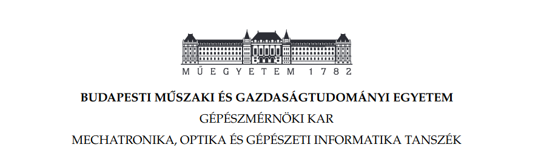
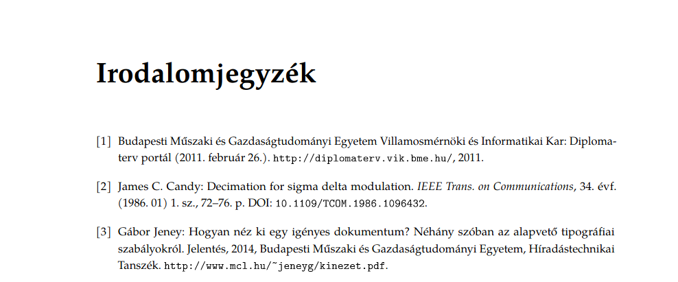
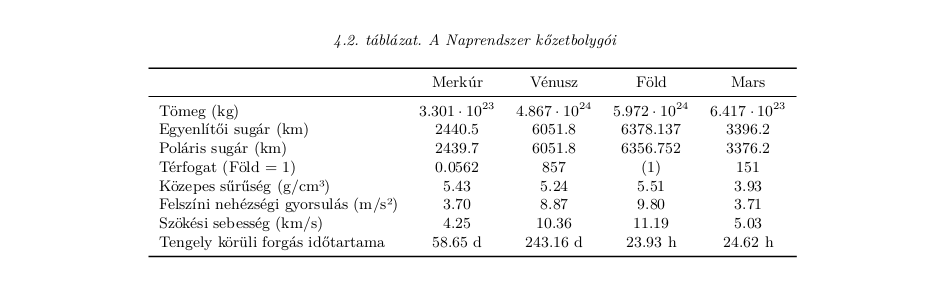

A sablon a BME Gépészmérnöki Kar irányelvei szerint készült. A Word sablonnal egyenértékű. A formázást mi beállítottuk, hogy Neked csak a tartalommal kelljen törődni.
Az első benyomás rendkívül fontos. Nyűgözd le az olvasóidat igényes címoldalakkal! A sablon tartalmaz szennycímoldalt, sorozatcímoldalt, címoldalt és copyright oldalt.
Az irodalomjegyzék összeállítása nehéz feladat. A BibTeX ezt elvégzi helyetted! Mi pedig beállított magyar és angol stílussal segítünk.
Készíts nyomtatáshoz méltó táblázatokat!
Nem kell LaTeX csomagokra vadásznod. Már írhatod is a bevezetést.
A sablon működik az összes TeX disztribócióval, bármely platformon. Használd Windows-on, Linuxon vagy Mac-en.